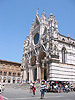

Adventures in Tuscany
This is a short chronicle of my visit to Italy. Click on the thumbnails to see a larger view of each photograph. Enjoy!
Pozzarello
 The house we stayed in was called Pozzarello and it was built around the year 1200 as the home of the gardner who tended the grounds of the adjacent castle. The thick walls kept us nice and cool inside, despite the blistering mid-day heat. This is the view from our bedroom window.
The house we stayed in was called Pozzarello and it was built around the year 1200 as the home of the gardner who tended the grounds of the adjacent castle. The thick walls kept us nice and cool inside, despite the blistering mid-day heat. This is the view from our bedroom window.
The Tuscan Countryside
 This is the scene on the way to Montalcino (all roads lead to Montalcino!). It looks a lot like the scene on the way to Sienna, and the scene on the way to the grocery store. We were surrounded by beautiful countryside for most of our travels.
This is the scene on the way to Montalcino (all roads lead to Montalcino!). It looks a lot like the scene on the way to Sienna, and the scene on the way to the grocery store. We were surrounded by beautiful countryside for most of our travels.
Sienna
 The closest city to our villa was Sienna, about 30 minutes away. We spent many days exploring the steep and crooked streets, sampling the local cuisine at outdoor restaurants, and stopping in the dark and echoey Duomo to escape the sun.
The closest city to our villa was Sienna, about 30 minutes away. We spent many days exploring the steep and crooked streets, sampling the local cuisine at outdoor restaurants, and stopping in the dark and echoey Duomo to escape the sun.
Sweets
 This is the store for the most famous bakery and the most delicous sweets in the city. We bought and tasted different sweets, and they are truly delicious.
This is the store for the most famous bakery and the most delicous sweets in the city. We bought and tasted different sweets, and they are truly delicious.
Cathedral
Along the stroll, we visited the Biggest Cathedral of the city. We saw how big and beautiful the sacred cathedral. Luckily, there were only few tourist on the same place so we were able to get inside and prayed for a while.
Lavender
 Outside the house we were staying, I saw a beautiful Lavender. I took the chance to take a picture of it for a souveneir. This kind of flower are rarelt to see in my own country, so the first time I saw these Lavender, I was amused of how beautiful and lavender-ish it was.
Outside the house we were staying, I saw a beautiful Lavender. I took the chance to take a picture of it for a souveneir. This kind of flower are rarelt to see in my own country, so the first time I saw these Lavender, I was amused of how beautiful and lavender-ish it was.